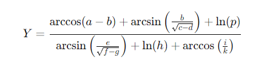

Simulación de errores con Ecuación Matemática
Presentado por: Maria Isabel Diaz Meneses - Código: 2216611

Procesar
Resultados
Tipo de Error
Totales
Porcentaje
Total de errores de arcoseno
0
0%
Total de errores de arcocoseno
0
0%
Total de errores de raíz cuadrada
0
0%
Total de errores de división
0
0%
Total de errores de logaritmo natural
0
0%